library(ggplot2)ggplot2 is a R package dedicated to data visualization. It can greatly improve the quality and aesthetics of your graphics, and will make you much more efficient in creating them.
In most cases a ggplot2 graphic start with ggplot(), supply a dataset and aesthetic mapping (with aes()). Then you can add on layers (like geom_point() or geom_histogram()), scales (like scale_colour_brewer()), faceting specifications (like facet_wrap()) and coordinate systems (like coord_flip()).
required data:
mpg## # A tibble: 234 x 11
## manufacturer model displ year cyl trans drv cty hwy fl class
## <chr> <chr> <dbl> <int> <int> <chr> <chr> <int> <int> <chr> <chr>
## 1 audi a4 1.8 1999 4 auto(l5) f 18 29 p compa…
## 2 audi a4 1.8 1999 4 manual(m5) f 21 29 p compa…
## 3 audi a4 2 2008 4 manual(m6) f 20 31 p compa…
## 4 audi a4 2 2008 4 auto(av) f 21 30 p compa…
## 5 audi a4 2.8 1999 6 auto(l5) f 16 26 p compa…
## # … with 229 more rowsggplot2 builds charts through layers using geom_ functions (like geom_point(),geom_bar())
p <- ggplot(mpg, aes(x = displ, y = hwy)) + geom_point()
p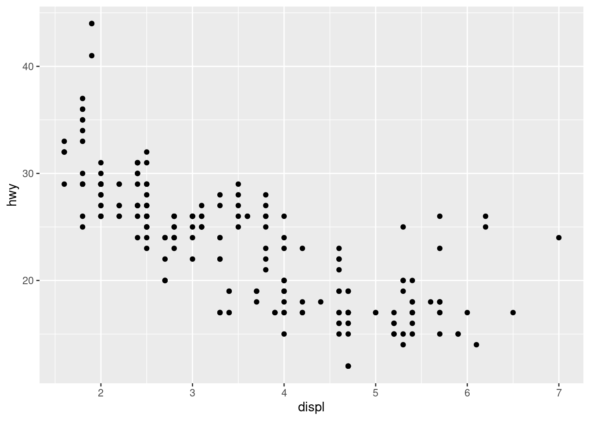
This produces a scatterplot defined by:
Data: mpg
Aesthetic mapping: engine size mapped to x position, fuel economy to y position.
Layer: points.
Pay attention to the structure of this function call: data and aesthetic mappings are supplied in ggplot(), then layers are added on with +. This is an important pattern, and as you learn more about ggplot2 you’ll construct increasingly sophisticated plots by adding on more types of components.
To add additional variables to a plot, we can use other aesthetics like colour, shape, alpha, and size
p <- ggplot(mpg, aes(displ, hwy, colour = class)) + geom_point()
p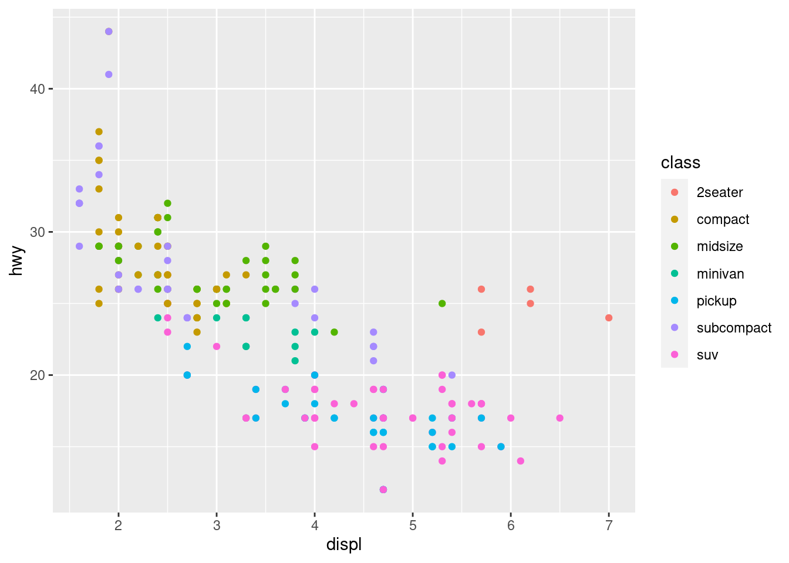
p <- ggplot(mpg, aes(displ, hwy, colour = class)) + scale_colour_brewer(palette="Oranges") + geom_point()
p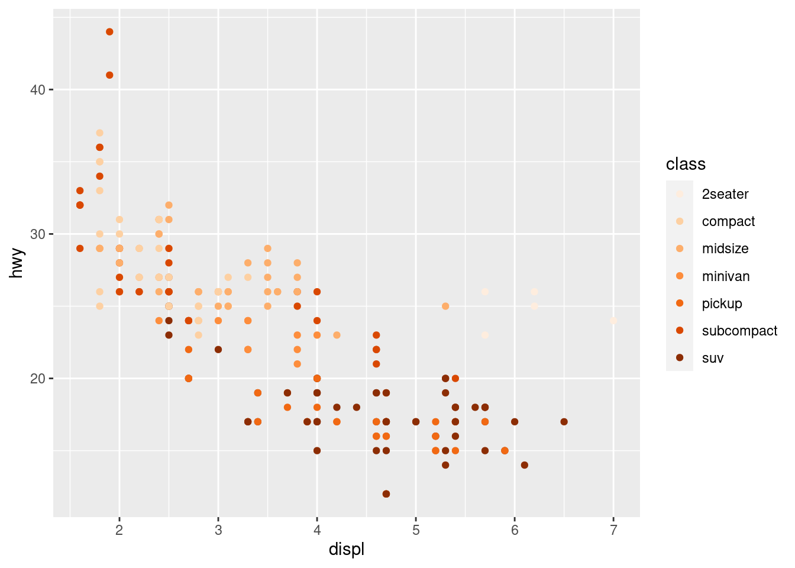
p <- ggplot(mpg, aes(displ, hwy, shape = drv)) + geom_point()
p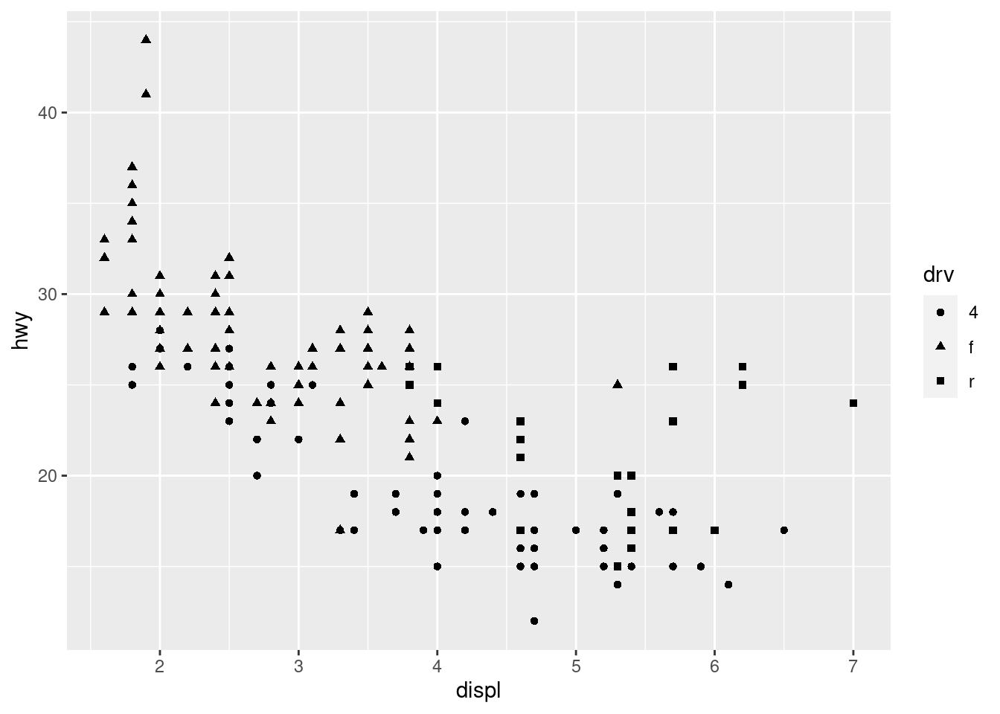
p <- ggplot(mpg, aes(displ, hwy, size = cyl)) + geom_point()
p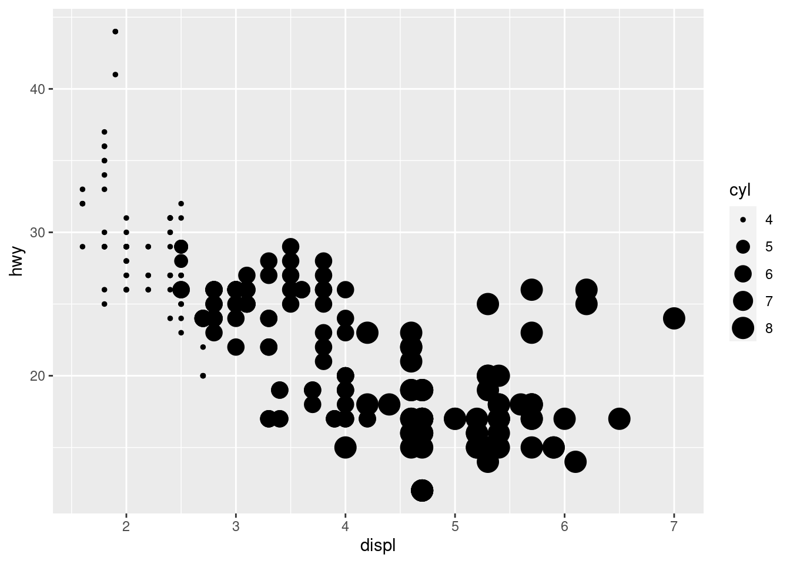
p <- ggplot(mpg, aes(displ, hwy, size = cyl, alpha=0.5)) + geom_point()
p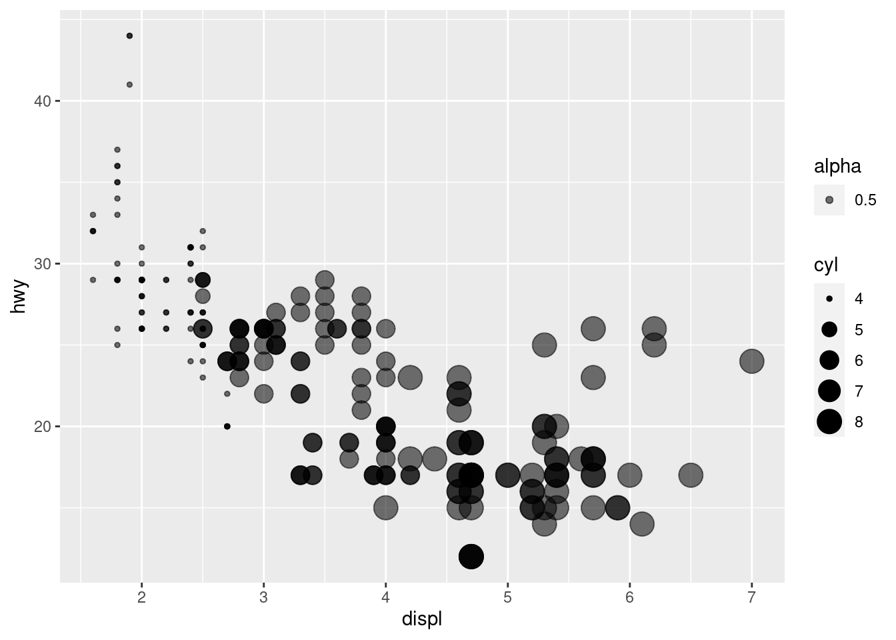
When constructing a data visualisation, it is often necessary to make annotations to the data displayed. Conceptually, an annotation supplies metadata for the plot: that is, it provides additional information about the data being displayed. From a practical standpoint, however, metadata is just another form of data. Because of this, the annotation tools in ggplot2 reuse the same geoms that are used to create other plots. However, to meet the specific needs that users often have when annotating plots, there are some helper functions in ggplot2 itself, and a number of other packages have extended ggplot2 in ways you may find helpful.
When customising a plot, it is often useful to modify the titles associated with the plot, axes, and legends. To assist with this task ggplot2 provides the labs() helper function, which lets you set the various titles using name-value pairs like title = "My plot title", x = "X axis" or fill = "fill legend":
p <- ggplot(mpg, aes(displ, hwy)) +
geom_point(aes(colour = factor(cyl))) +
labs(
x = "Engine displacement (litres)",
y = "Highway miles per gallon",
colour = "Number of cylinders",
title = "Mileage by engine size and cylinders",
subtitle = "Source: http://fueleconomy.gov"
)
p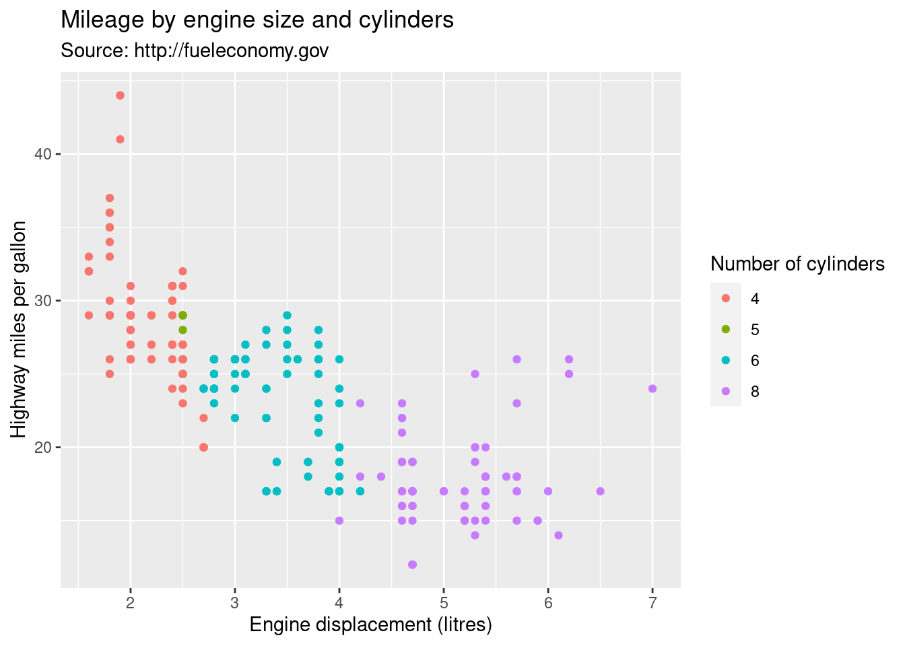
Adjust the position of title for the plot:
p <- ggplot(mpg, aes(displ, hwy)) +
geom_point(aes(colour = factor(cyl))) +
labs(
x = "Engine displacement (litres)",
y = "Highway miles per gallon",
colour = "Number of cylinders",
title = "Mileage by engine size and cylinders",
subtitle = "Source: http://fueleconomy.gov"
) +
theme(
plot.title = element_text(hjust = 0.5, size = 18),
plot.subtitle = element_text(hjust = 0.5, size = 12)
)
p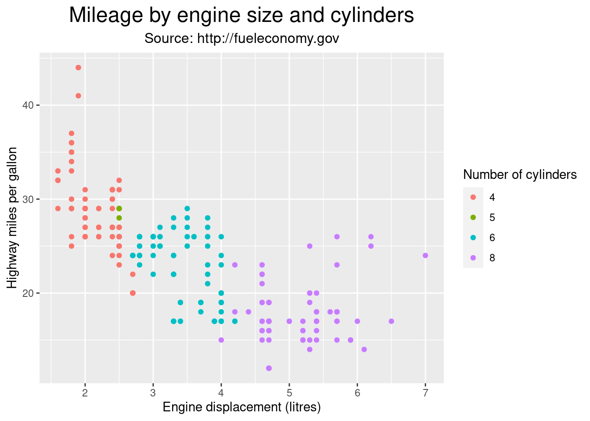
The values supplied to labs() are typically text strings, with \n used to specify line breaks, but you can also supply mathematical expressions wrapped in quote(). The rules by which these expressions are interpreted can be found by typing ?plotmath.
values <- seq(from = -2, to = 2, by = .01)
df <- data.frame(x = values, y = values ^ 3)
ggplot(df, aes(x, y)) +
geom_path() +
labs(y = quote(f(x) == x^3))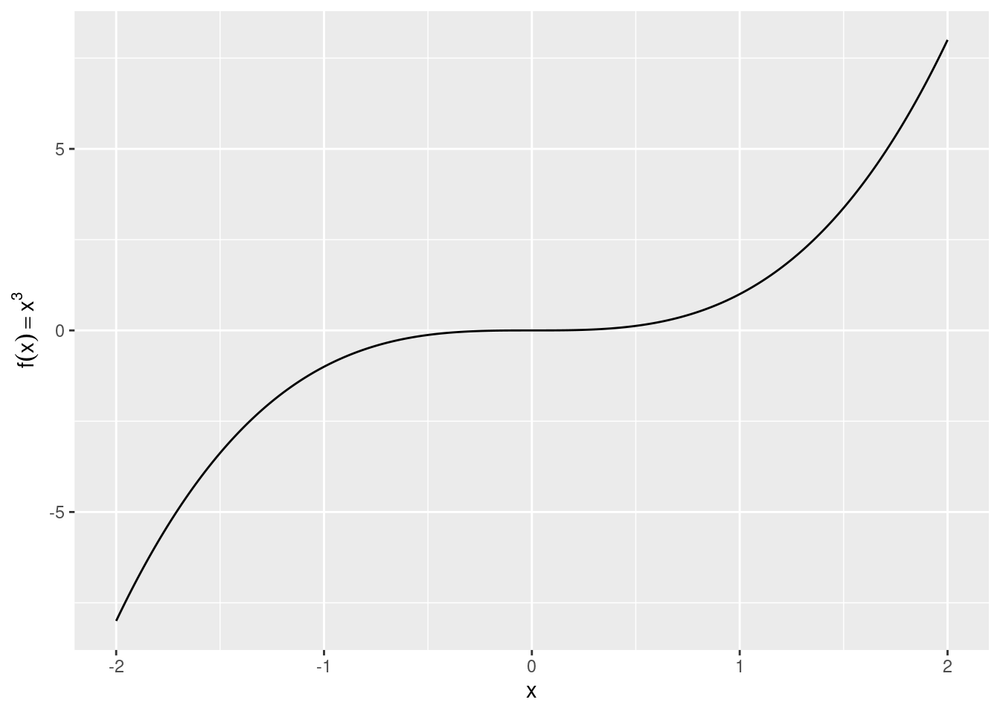
ggplot2 includes the annotate() function for annotation
yrng <- range(economics$unemploy)
xrng <- range(economics$date)
caption <- paste(
strwrap("Unemployment rates in the US have varied a lot over the years", 40),
collapse = "\n"
)
p <- ggplot(economics, aes(date, unemploy)) +
geom_line() +
annotate(
geom = "text", x = xrng[1], y = yrng[2],
label = caption, hjust = 0, vjust = 1, size = 4
)
p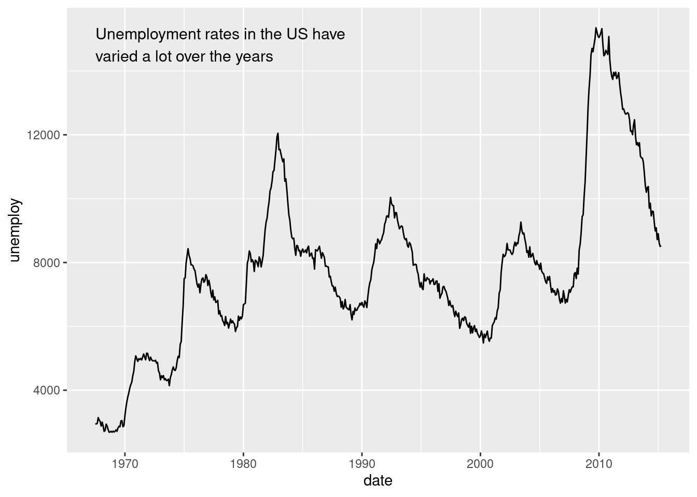
The convenience of the annotate() function comes in handy in other situations.
For example, a common form of annotation is to highlight a subset of points by drawing larger points in a different colour underneath the main data set.
To highlight vehicles manufactured by Subaru you could use this to create the basic plot:
p <- ggplot(mpg, aes(displ, hwy)) +
geom_point(
data = dplyr::filter(mpg, manufacturer == "subaru"),
colour = "orange",
size = 3
) +
geom_point()
p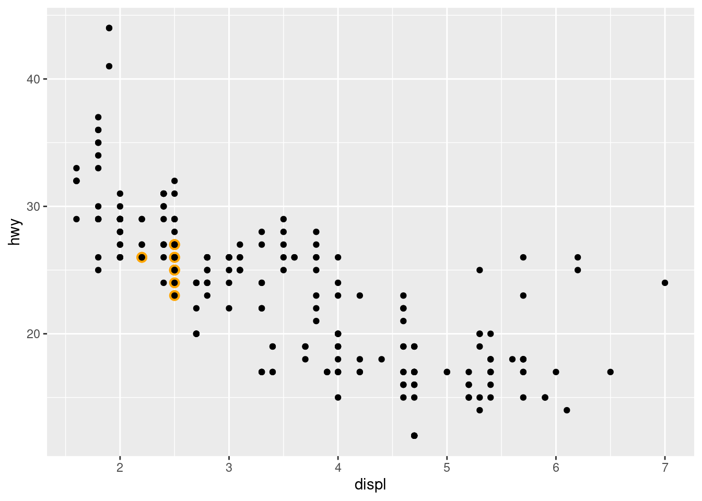
The problem with this is that the highlighted category would not be labelled. This is easily rectified using annotate()
p +
annotate(geom = "point", x = 5.5, y = 40, colour = "orange", size = 3) +
annotate(geom = "point", x = 5.5, y = 40) +
annotate(geom = "text", x = 5.6, y = 40, label = "subaru", hjust = "left")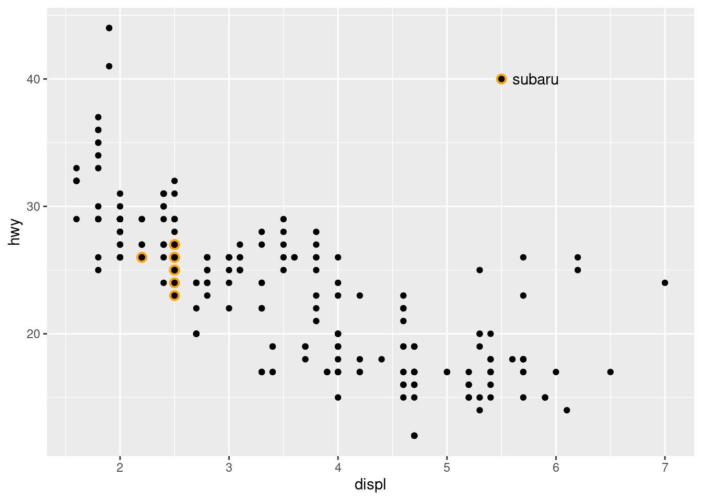
Use theme() or theme_*() if you just need to tweak the display of an existing theme.
p <- ggplot(mpg, aes(displ, hwy)) +
geom_point(aes(colour = factor(cyl))) +
labs(
x = "Engine displacement (litres)",
y = "Highway miles per gallon",
colour = "Number of cylinders",
title = "Mileage by engine size and cylinders",
subtitle = "Source: http://fueleconomy.gov"
) +
# theme_bw() +
theme_classic()
p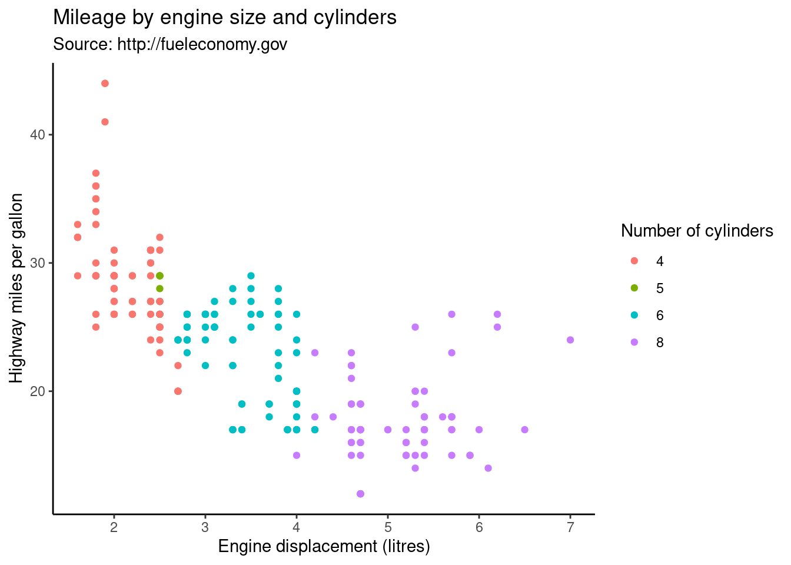
Use ggsave() function to save the figure.
p <- ggplot(mpg, aes(displ, hwy)) +
geom_point(aes(colour = factor(cyl))) +
labs(
x = "Engine displacement (litres)",
y = "Highway miles per gallon",
colour = "Number of cylinders",
title = "Mileage by engine size and cylinders",
subtitle = "Source: http://fueleconomy.gov"
) +
theme_classic()
if (!dir.exists('./output/figures')) {dir.create('./output/figures', recursive = T)}
ggsave('./output/figures/plot.pdf', plot = p, width = 5, height = 5)
ggsave('./output/figures/plot.png', plot = p, width = 5, height = 5)Use pdf() png() jpeg() function to save the figure.
p <- ggplot(mpg, aes(displ, hwy)) +
geom_point(aes(colour = factor(cyl))) +
labs(
x = "Engine displacement (litres)",
y = "Highway miles per gallon",
colour = "Number of cylinders",
title = "Mileage by engine size and cylinders",
subtitle = "Source: http://fueleconomy.gov"
) +
theme_bw()
pdf('./output/figures/plot1.pdf')
p
dev.off()
png('./output/figures/plot1.png')
p
dev.off()